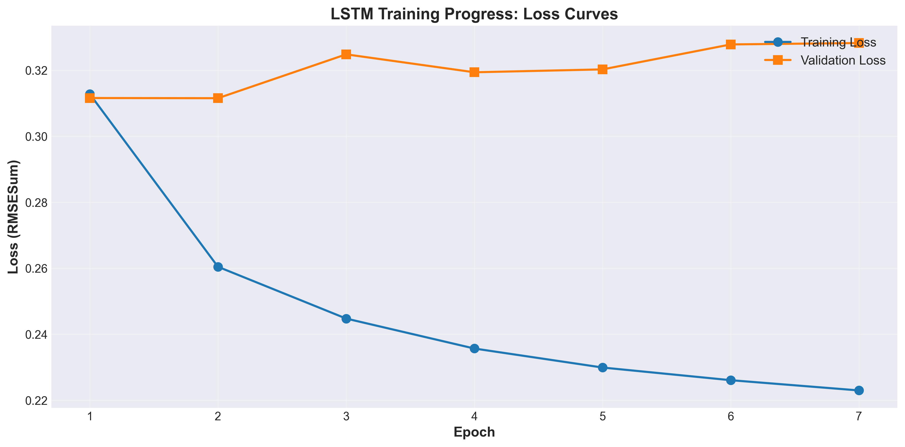
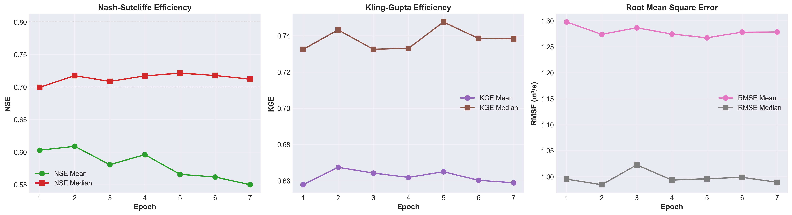
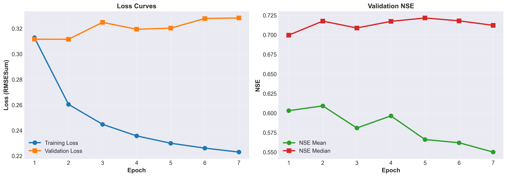

SimpleLSTM on CAMELS-US: Training Results¶
This document presents the training results of a standard LSTM model on the CAMELS-US dataset for streamflow prediction.
Experiment Overview¶
- Model: SimpleLSTM neural network
- Dataset: CAMELS-US (671 basins)
- Training Period: 1980-01-01 to 2004-12-31 (25 years)
- Validation Period: 2005-01-01 to 2009-12-31 (5 years)
- Test Period: 2010-01-01 to 2014-12-31 (5 years)
Model Configuration¶
Architecture¶
1 2 3 4 5 | |
Total Parameters: ~133K trainable parameters
Input Features¶
Time-Varying Features (7)¶
- Precipitation (mm/day)
- Daylight duration (hours)
- Solar radiation (W/m²)
- Maximum daily temperature (°C)
- Minimum daily temperature (°C)
- Vapor pressure (Pa)
- Potential evapotranspiration (mm/day)
Static Catchment Features (23)¶
- Topography: area, elevation, slope, gauge location
- Climate: precipitation mean, PET mean
- Geology: geology classes, porosity, permeability
- Vegetation: forest fraction, LAI, land cover
- Soil: root depth, soil depth, porosity, conductivity, water content
- Administrative: HUC-02 classification
Training Configuration¶
| Parameter | Value |
|---|---|
| Optimizer | Adam |
| Learning Rate | 0.0005 |
| LR Scheduler | ExponentialLR (factor: 0.95) |
| Loss Function | RMSESum |
| Batch Size | 256 |
| Total Epochs | 50 |
| Early Stopping | Enabled (patience: 5) |
| Forecast Length | 365 days |
| Device | GPU (CUDA) |
Training Progress¶
Loss Curves¶

Training Loss decreased steadily from 0.313 (Epoch 1) to 0.223 (Epoch 7), showing consistent improvement with the largest drop of 16.7% between Epochs 1-2.
Validation Loss showed overfitting signs after Epoch 2, where it reached minimum (0.3115) and then increased to 0.328 by Epoch 7 while training loss continued decreasing.
Validation Metrics by Epoch¶

NSE (Nash-Sutcliffe Efficiency): - NSE Median peaked at 0.7215 (Epoch 5), indicating good performance - NSE Mean remained around 0.55-0.61 across epochs - Higher median than mean suggests good performance on majority of basins
KGE (Kling-Gupta Efficiency): - KGE Median peaked at 0.7476 (Epoch 5), indicating good performance - KGE Mean: 0.658-0.667, more stable than NSE throughout training
RMSE (Root Mean Square Error): - RMSE Median lowest at 0.985 m³/s (Epoch 2) - Both metrics showed minimal variation across epochs (< 5%)
Training Overview¶

Figure: Combined view of training/validation loss (left) and validation NSE metrics (right).
Key Observations¶
-
Best Validation Performance: Epoch 5 achieved optimal NSE/KGE median scores (NSE: 0.7215, KGE: 0.7476)
-
Overfitting Pattern: Training loss decreased continuously (29% reduction) while validation loss increased after Epoch 2 (5% increase), indicating model achieved best generalization between Epochs 2-5
-
Early Stopping: Training stopped at Epoch 7 (patience=5). Validation loss minimum at Epoch 2, but NSE/KGE metrics better at Epoch 5, demonstrating importance of using multiple metrics for model selection
-
Model Convergence: Loss change rate decreased from 16.7% (Epoch 1→2) to 1.4% (Epoch 6→7), with NSE and KGE medians stabilizing in 0.71-0.75 range
Note: Training stopped at Epoch 7 due to early stopping.
Test Results (2010-2014)¶
Performance Statistics (669 valid basins):
| Metric | Mean | Median | Std | 25% | 75% | Min | Max |
|---|---|---|---|---|---|---|---|
| NSE | 0.523 | 0.717 | 1.584 | 0.543 | 0.808 | -29.65 | 0.936 |
| KGE | 0.629 | 0.721 | 0.418 | 0.547 | 0.827 | -5.78 | 0.938 |
| RMSE | 1.248 | 1.018 | 0.996 | 0.588 | 1.616 | 0.025 | 8.024 |
Performance Distribution¶
- Excellent (NSE > 0.8): ~25% of basins (169 basins)
- Good (0.7 < NSE ≤ 0.8): ~25% of basins (168 basins)
- Satisfactory (0.5 < NSE ≤ 0.7): ~25% of basins (168 basins)
- Unsatisfactory (NSE ≤ 0.5): ~25% of basins (164 basins)
Median NSE of 0.717 indicates strong performance across the majority of catchments.
Top Performing Basins¶
| Basin ID | NSE | RMSE | KGE | Region |
|---|---|---|---|---|
| 01013500 | 0.856 | 0.699 | 0.907 | Northeast |
| 01022500 | 0.847 | 1.011 | 0.798 | Northeast |
| 01030500 | 0.831 | 1.018 | 0.717 | Northeast |
| 01031500 | 0.827 | 1.355 | 0.713 | Northeast |
| 01057000 | 0.855 | 1.143 | 0.841 | Northeast |
Key Findings¶
- Strong Generalization: Median NSE of 0.717 demonstrates robust performance across diverse catchments
- Efficient Training: Model converged in 7 epochs (~47 minutes total)
- Overfitting Detection: Validation loss increased after Epoch 2, but NSE/KGE metrics continued improving until Epoch 5
- Basin Heterogeneity: Wide performance range reflects the diversity of hydrological conditions across CAMELS-US
Output Files¶
Results are saved in results/lstm_results/camels_all/:
best_model.pth: Model checkpoint with best validation performancemetric_streamflow.csv: Per-basin evaluation metrics (671 rows)epochbest_model.pthflow_obs.nc: Observed streamflow (NetCDF)epochbest_model.pthflow_pred.nc: Predicted streamflow (NetCDF)dapengscaler_stat.json: Normalization statistics*.json: Complete configuration snapshot
How to Reproduce¶
1. Setup Environment¶
1 2 3 | |
2. Configure Data Path¶
Create ~/hydro_setting.yml:
1 2 3 4 | |
3. Run Training¶
1 | |
Modify the example script to train on all 671 basins by updating the gage_id parameter.
Evaluation Metrics¶
Nash-Sutcliffe Efficiency (NSE)¶
$$\text{NSE} = 1 - \frac{\sum_{t=1}^{T}(Q_{\text{obs}}(t) - Q_{\text{sim}}(t))^2}{\sum_{t=1}^{T}(Q_{\text{obs}}(t) - \bar{Q}_{\text{obs}})^2}$$
- Range: (-∞, 1], optimal = 1
- Interpretation:
- NSE > 0.8: Excellent
- 0.7 < NSE ≤ 0.8: Good
- 0.5 < NSE ≤ 0.7: Satisfactory
- NSE ≤ 0.5: Unsatisfactory
Kling-Gupta Efficiency (KGE)¶
$$\text{KGE} = 1 - \sqrt{(r - 1)^2 + (\alpha - 1)^2 + (\beta - 1)^2}$$
Where $r$ is correlation, $\alpha$ is variability ratio, $\beta$ is bias ratio.
- Range: (-∞, 1], optimal = 1
- Interpretation: KGE > 0.5 considered acceptable
Root Mean Square Error (RMSE)¶
$$\text{RMSE} = \sqrt{\frac{1}{T}\sum_{t=1}^{T}(Q_{\text{obs}}(t) - Q_{\text{sim}}(t))^2}$$
- Unit: m³/s
- Lower is better
Further Resources¶
- torchhydro Documentation: Complete API reference
- Example Scripts: Training examples for different models
- Models API: Available model architectures
- Datasets API: Data handling and preprocessing
Last Updated: December 2025